De la idea al video publicado en YouTube
Un tutorial en cuatro módulos: configurar el acceso a YouTube, preparar el kit para crear animaciones y videos cortos con Claude, aprender la API como programador y practicar en un notebook.
Configurar Google Cloud y OAuth
Cinco pasos en la consola para obtener client_secret.json, la llave que permite a tu código actuar sobre tu canal.
Crear un proyecto
- Abre console.cloud.google.com/projectcreate.
- Nombre:
Automatizacion Videos. El ID se genera solo y no se puede cambiar. - Revisa Organización: si tu cuenta es institucional aparece su dominio.
- Pulsa Crear y selecciona el proyecto en el selector superior.
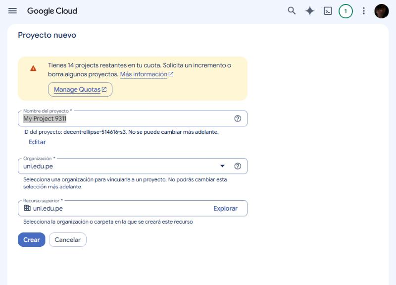
Habilitar YouTube Data API v3
Sin esto, cualquier llamada responde 403 accessNotConfigured.
- Abre la ficha de la API con tu proyecto seleccionado.
- Pulsa Habilitar. Cuando termina, el botón cambia a Administrar.
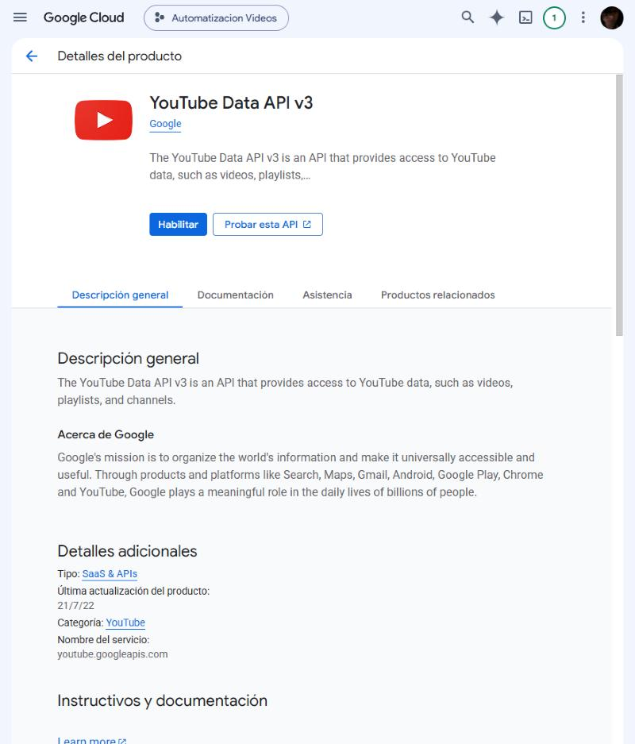
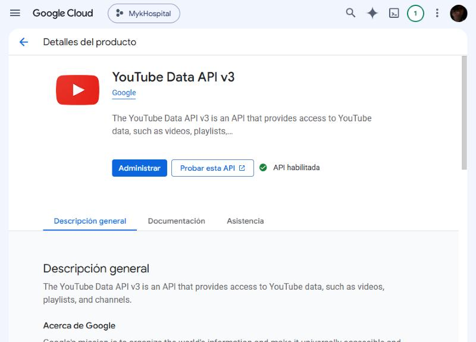
Configurar Google Auth Platform
- Abre Google Auth Platform y pulsa Comenzar.
- Información de la app: nombre de la app y correo de asistencia.
- Público: marca Usuarios externos. Interno solo sirve si el canal pertenece a la misma organización de Google Workspace.
- Información de contacto: un correo para avisos de Google.
- Finalizar: acepta la política de datos, pulsa Continuar y luego Crear.
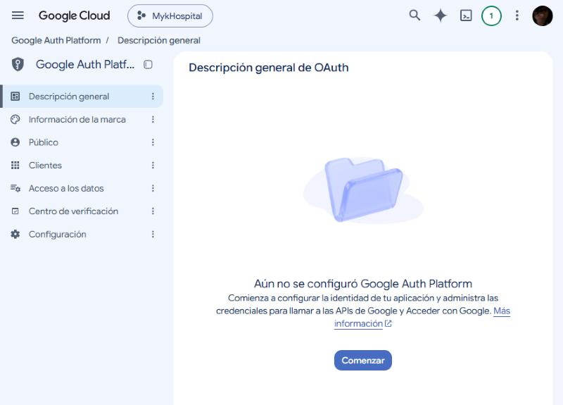
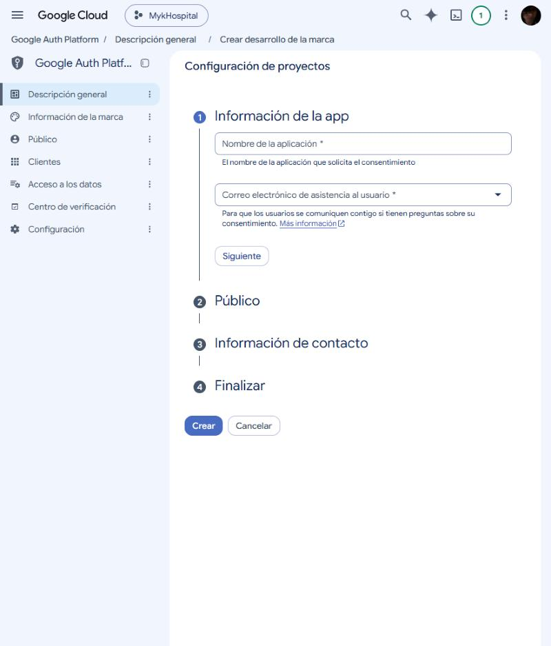
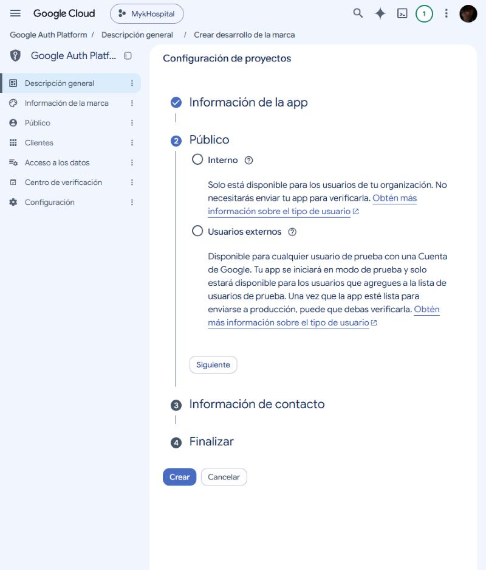
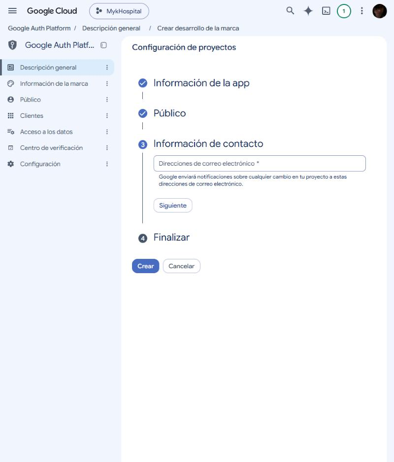
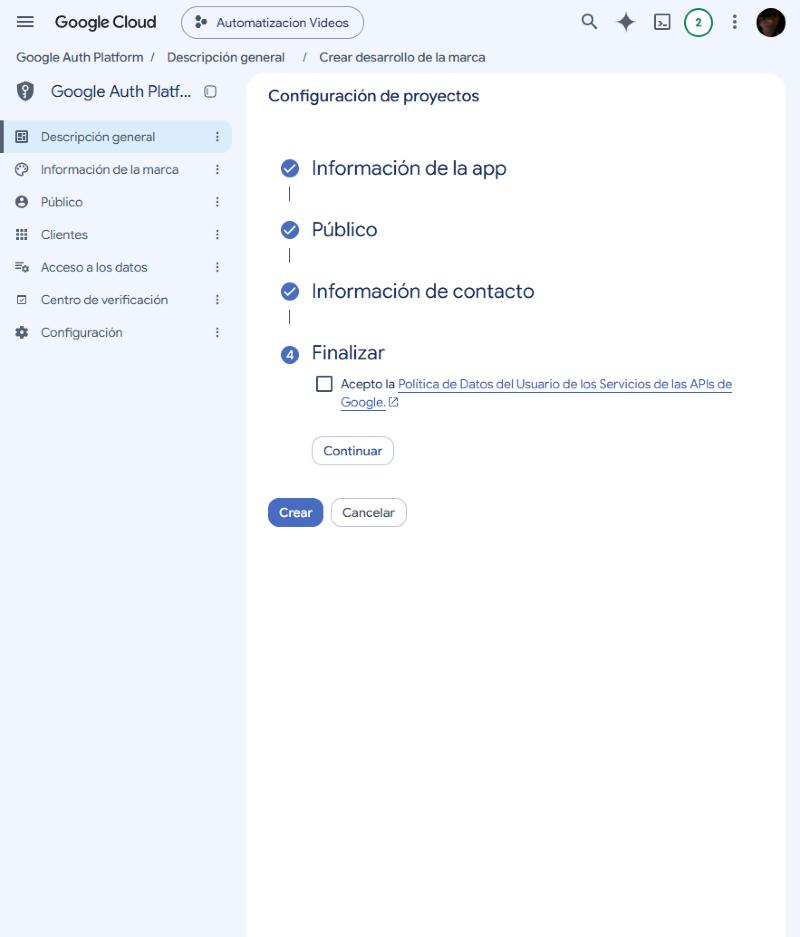
Agregar usuarios de prueba
En modo Prueba, solo las cuentas de esta lista pueden autorizar la app. Si falta la tuya, Google responde “Acceso bloqueado”.
- Menú lateral → Público → Usuarios de prueba → + Add users.
- Escribe el correo de la cuenta dueña del canal, pulsa Enter y luego Guardar.
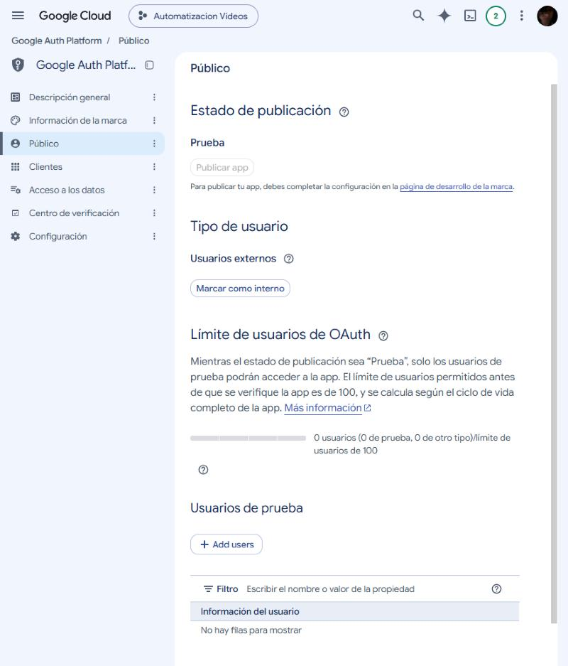
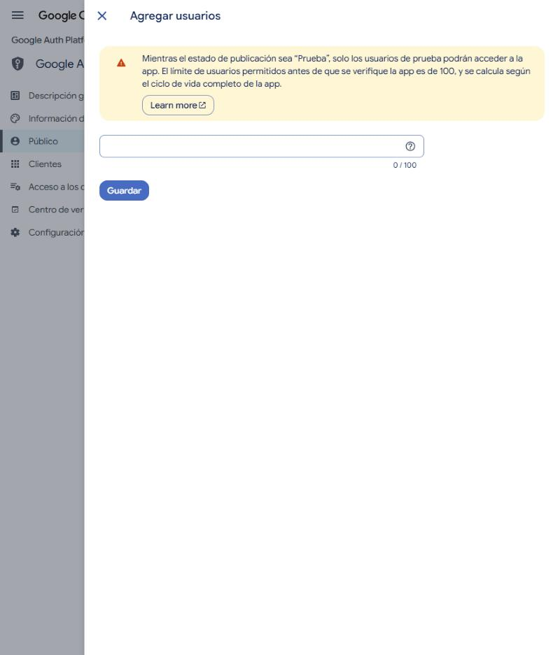
Crear el cliente OAuth de escritorio
- Menú lateral → Clientes → + Crear cliente.
- Tipo de aplicación: App de escritorio. Nombre:
Script subida videos. - En la ventana final, pulsa Descargar JSON antes de Aceptar. El secreto no se vuelve a mostrar.
- Guarda el archivo en la carpeta del proyecto. Nunca lo subas a GitHub.
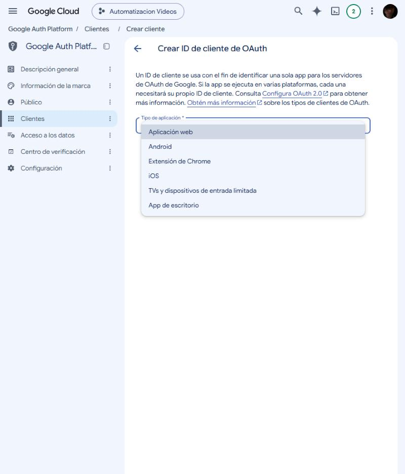
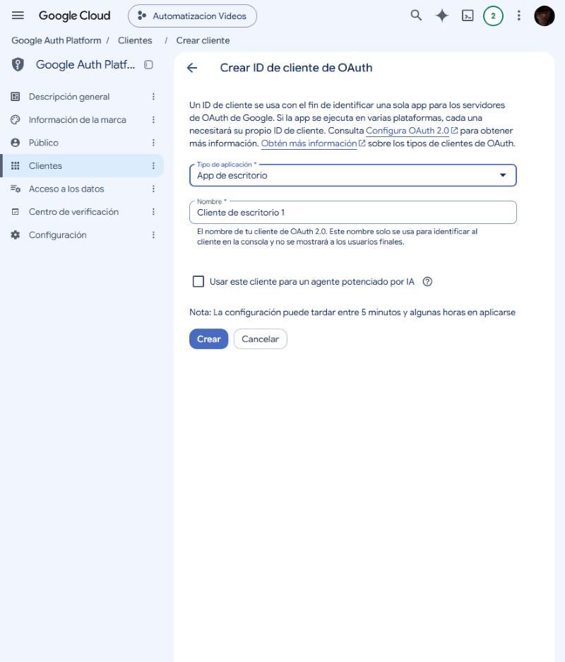
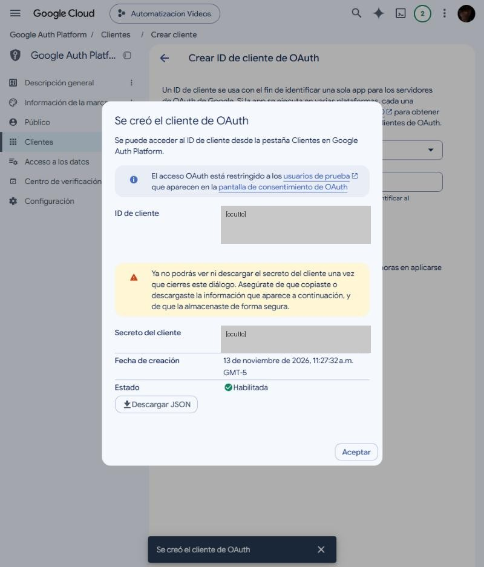
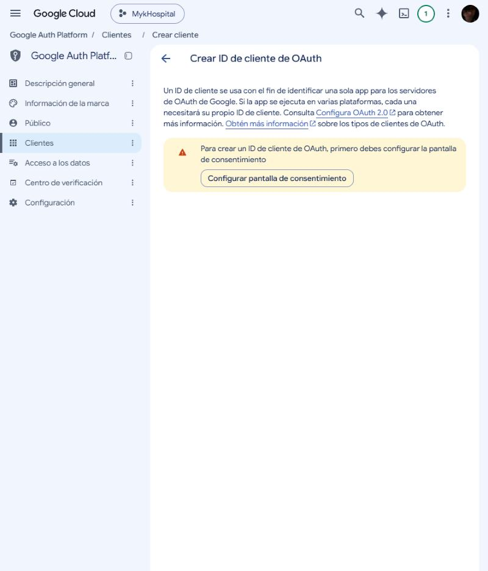
Estado de tu proyecto
| Elemento | Valor | Estado |
|---|---|---|
| Proyecto | automatizacion-videos-514616 | Creado |
| YouTube Data API v3 | Habilitada | Listo |
| Público | Usuarios externos · modo Prueba | Token 7 días |
| Usuarios de prueba | 2 (correo uni.pe + Gmail propietario de Gabito Tu IA) | Listo |
| Cliente OAuth | App de escritorio · “Script subida videos” | Creado |
| Credencial local | 00_general_youtube/credenciales/client_secret.json | Descargado |
| Canal Gabito Tu IA | cuenta_gabito-tu-ia/ | Falta autorizar |
| Canal personal | cuenta_gabriel-personal/ | Autorizado |
Varios canales: una app, un token por canal
El client_secret.json identifica a tu app y sirve para cualquier canal. Cada canal tiene su propia carpeta con su token, sus notebooks y sus videos.
00_general_youtube/ ← común
├── tutorial/ ← esta guía
├── credenciales/client_secret.json
├── plantilla_cuenta/ ← copiar para un canal nuevo
└── requirements.txt
cuenta_gabito-tu-ia/ ← un canal = una carpeta independiente
├── cuenta.json ← handle, correo propietario, canal_id
├── token.json ← permiso de ESTE canal
├── notebooks/ ← laboratorio de este canal
└── assets/ generados/ out/
cuenta_gabriel-personal/ ← misma estructuraCanal personal o canal de marca
| Canal personal | Canal de marca | |
|---|---|---|
| Dueño | Un correo (Gmail o Workspace) | Una “cuenta de marca” que administran uno o varios correos |
| Correo que ves en “Cuenta de Google” | El correo real | …@pages.plusgoogle.com: interno, no sirve para iniciar sesión |
| Dónde ver el propietario | Foto de perfil | Cuenta de Google → Datos de la cuenta de marca → Gestionar permisos, o Studio → Configuración → Permisos |
| Usuario de prueba | Ese correo | El correo personal propietario |
| Al autorizar | Eliges el correo | Eliges el correo y después el canal |
Agregar otro canal
- Copia
00_general_youtube/plantilla_cuenta/comocuenta_<alias>/y completacuenta.json. - Agrega su correo propietario en Público → Usuarios de prueba.
- Abre
cuenta_<alias>/notebooks/y autoriza. El notebook detecta su canal por la carpeta; la sección 1 comprueba el handle y guarda elcanal_id.
Kit para animaciones y videos cortos con Claude
Qué necesita Claude para generar clips con IA, editar con código y renderizar, y qué ya tienes instalado.
Dentro de Claude (desktop, pestaña Code)
| Componente | Para qué sirve | Estado |
|---|---|---|
| Claude Code (app de escritorio) | Escribe y ejecuta código en tu carpeta: Remotion, FFmpeg, scripts de subida. | Activo |
Skill anuncio-video-pro | Edita anuncios 9:16 a partir de tomas a cámara: limpieza de voz, subtítulos palabra por palabra, zooms, tarjetas animadas, CTA y masterizado a −14 LUFS. | Instalada |
Skills remotion-* | Crear, previsualizar y renderizar videos en React: subtítulos, mapas, animaciones, Studio. | Instaladas |
| Conector de generación con IA (Higgsfield) | Genera imágenes, clips de video, voz y música, quita fondos, reescala y adapta formatos. Consume créditos de esa plataforma. | Conectado |
| Conector de TikTok (mismo proveedor) | Publicar en TikTok y consultar música en tendencia. | Opcional |
| Navegador integrado | Revisar YouTube Studio, previsualizar Remotion Studio y tomar capturas. | Activo |
| Plan de Claude | Render y edición consumen muchas interacciones. Pro sirve para pruebas; Max conviene para producción diaria. | Según uso |
En tu PC
| Herramienta | Uso | Detectado | Estado |
|---|---|---|---|
| Node.js | Remotion (React → video) | v24.18 | OK |
| FFmpeg | Cortar, unir, convertir, normalizar audio | 8.1.1 full | OK |
| Python | Notebook, API de YouTube, utilidades | 3.11.0 | OK |
| Jupyter (ipykernel) | Ejecutar el laboratorio | 7.4 | OK |
| Google Chrome | Render headless de Remotion | Instalado | OK |
| Librerías Google API | google-api-python-client, google-auth-oauthlib | Instaladas hoy | OK |
| Whisper | Transcribir voz para subtítulos sincronizados | No encontrado | Se instala al usar la skill |
| VS Code + extensión Jupyter | Abrir el notebook cómodamente | — | Recomendado |
| GPU | No es necesaria: la generación con IA corre en la nube | — | Opcional |
Flujo de producción propuesto
Estructura de carpetas sugerida para las pruebas:
Automatizacion videos IA/
├── 00_general_youtube/ ← guía, credencial de la app, plantilla
└── cuenta_<canal>/ ← una por canal
├── notebooks/ ← laboratorio de la API
├── assets/ ← logos, fuentes, música, tomas grabadas
├── generados/ ← clips e imágenes creados con IA
├── remotion/ ← proyecto de animación (lo crea Claude)
└── out/ ← videos finales listos para subirPrompts para tus primeras pruebas
Animación de texto
“Crea con Remotion un Short 1080×1920 de 10 s: título animado ‘3 trucos de IA’, tres tarjetas que entran con resorte y CTA final. Renderízalo en out/.”
Clip generado con IA
“Genera un clip de 5 s vertical de una oficina moderna con luz cálida, cámara lenta hacia adelante, y guárdalo en generados/.”
Edición de anuncio
“Con las tomas de assets/tomas, arma un anuncio de 30 s con subtítulos palabra por palabra y notificación de WhatsApp animada.”
Publicar
“Sube out/short-01.mp4 a YouTube como privado con título, descripción y etiquetas, programado para mañana a las 18:00.”
YouTube Data API v3 para programadores
Es una API REST: cada recurso tiene métodos list, insert, update y delete, y todas las respuestas son JSON.
Anatomía de una petición
Authorization: Bearer ya29.a0Af…
part siempre, más un filtrokey= para datos públicosLa librería de Python genera esos métodos a partir del recurso. La regla es siempre la misma:
youtube = build("youtube", "v3", credentials=creds)
respuesta = youtube.<recurso>().<método>(**parámetros).execute()
# channels list part="snippet", mine=True
# Ejemplo real
resp = youtube.channels().list(part="snippet,statistics", mine=True).execute()
print(resp["items"][0]["statistics"]["subscriberCount"])El mismo pedido sin librería, con curl:
curl -H "Authorization: Bearer $TOKEN" \
"https://www.googleapis.com/youtube/v3/channels?part=snippet,statistics&mine=true"Autenticación y scopes
Hay dos formas de autenticarse:
- API key: solo lee datos públicos, como buscar videos o ver estadísticas de cualquier canal. Se pasa como
key=…. - OAuth 2.0: necesario para todo lo que sea “mío” (
mine=true) y para escribir. Los scopes definen qué puede hacer el token.
Scope (prefijo https://www.googleapis.com/auth/) | Permite |
|---|---|
youtube.readonly | Solo leer tu canal, videos y listas. |
youtube.upload | Solo subir videos. |
youtube | Gestión completa: leer, subir, editar, miniaturas y listas. Es el que usa el laboratorio. |
youtube.force-ssl | Como youtube, y además comentarios y subtítulos (captions). |
yt-analytics.readonly | YouTube Analytics API: retención, minutos vistos. Es otra API que hay que habilitar aparte. |
from google_auth_oauthlib.flow import InstalledAppFlow
SCOPES = ["https://www.googleapis.com/auth/youtube"]
flow = InstalledAppFlow.from_client_secrets_file(
"00_general_youtube/credenciales/client_secret.json", SCOPES)
creds = flow.run_local_server(port=0, login_hint="correo@gmail.com") # navegador → cuenta → token
open("cuenta_gabito-tu-ia/token.json", "w").write(creds.to_json()) # un token por canalEl parámetro part
part es obligatorio y decide qué bloques del recurso vienen en la respuesta. Pide solo los que uses: algunos métodos cobran más cuota por cada bloque extra, y la respuesta pesa menos.
| part | En channels | En videos |
|---|---|---|
snippet | título, descripción, customUrl, miniaturas, país | título, descripción, tags, categoryId, publishedAt, miniaturas |
statistics | viewCount, subscriberCount, videoCount | viewCount, likeCount, commentCount |
contentDetails | relatedPlaylists.uploads: lista con todos tus videos | duration (ISO 8601, ej. PT1M5S), definition, caption |
status | privacyStatus, isLinked, madeForKids | privacyStatus, uploadStatus, publishAt, madeForKids |
brandingSettings | palabras clave, banner, configuración del canal | — |
processingDetails | — | estado del procesamiento tras subir (solo el dueño) |
Recursos, métodos y costo de cuota
Cada proyecto tiene 10.000 unidades al día, que se reinician a medianoche hora del Pacífico. Cada llamada descuenta según el método:
| Llamada | Para qué | Filtros y parámetros clave | Unidades |
|---|---|---|---|
channels.list | Datos de un canal | mine, id, forHandle (ej. @midcanal) | 1 |
videos.list | Datos de videos | id (hasta 50 separados por coma), chart=mostPopular, regionCode | 1 |
playlistItems.list | Videos de una lista (incluida la de subidas) | playlistId, maxResults, pageToken | 1 |
playlists.list | Tus listas | mine, channelId | 1 |
videoCategories.list | IDs de categoría válidos | regionCode (ej. PE), hl | 1 |
commentThreads.list | Comentarios de un video | videoId, order, textFormat | 1 |
search.list | Buscar en todo YouTube | q, type, order, publishedAfter, regionCode | 100 |
videos.update | Cambiar título, tags, privacidad | body con id + parts completos | 50 |
thumbnails.set | Miniatura personalizada | videoId, media_body (JPG/PNG < 2 MB) | 50 |
playlistItems.insert | Agregar video a una lista | body con playlistId y resourceId | 50 |
videos.insert | Subir video | body snippet + status, media_body | 1.600 |
search.list (100 unidades). Usa la lista de subidas: channels.list → uploads → playlistItems.list, que cuesta 1 unidad por página. Los costos vigentes están en la calculadora oficial.Qué JSON devuelve
Todas las respuestas list tienen la misma estructura: un sobre con kind, pageInfo y tokens de página, y dentro el arreglo items.
{
"kind": "youtube#channelListResponse",
"etag": "x8kXwD...",
"pageInfo": { "totalResults": 1, "resultsPerPage": 5 },
"items": [
{
"kind": "youtube#channel",
"id": "UCxxxxxxxxxxxxxxxxxxxxxx",
"snippet": {
"title": "Mi Canal",
"description": "Videos de automatización con IA",
"customUrl": "@micanal",
"publishedAt": "2024-03-10T15:22:01Z",
"thumbnails": {
"default": { "url": "https://yt3.ggpht.com/...", "width": 88, "height": 88 },
"high": { "url": "https://yt3.ggpht.com/...", "width": 800, "height": 800 }
},
"country": "PE"
},
"contentDetails": {
"relatedPlaylists": { "likes": "", "uploads": "UUxxxxxxxxxxxxxxxxxxxxxx" }
},
"statistics": {
"viewCount": "15230",
"subscriberCount": "412",
"hiddenSubscriberCount": false,
"videoCount": "37"
}
}
]
}viewCount, subscriberCount y similares son strings: conviértelos con int() antes de operar. Las fechas vienen en ISO 8601 UTC.Respuesta de videos.insert: el recurso video recién creado. Lo más importante es el id.
{
"kind": "youtube#video",
"id": "dQw4w9WgXcQ",
"snippet": { "title": "Prueba API", "categoryId": "22", "channelId": "UC..." },
"status": {
"uploadStatus": "uploaded",
"privacyStatus": "private",
"publishAt": "2026-11-20T23:00:00Z",
"selfDeclaredMadeForKids": false
}
}Paginación
maxResults va de 0 a 50. Si hay más resultados, la respuesta incluye nextPageToken, que se envía como pageToken en la siguiente llamada.
videos, token = [], None
while True:
r = youtube.playlistItems().list(
part="contentDetails", playlistId=uploads_id,
maxResults=50, pageToken=token).execute()
videos += [i["contentDetails"]["videoId"] for i in r["items"]]
token = r.get("nextPageToken")
if not token:
breakSubida de videos (videos.insert)
from googleapiclient.http import MediaFileUpload
body = {
"snippet": {
"title": "Mi Short", # máx. 100 caracteres
"description": "Hecho con IA #shorts", # máx. 5000 bytes
"tags": ["ia", "automatizacion"], # máx. 500 caracteres en total
"categoryId": "22", # 22 = People & Blogs, 28 = Ciencia y tecnología
"defaultLanguage": "es"
},
"status": {
"privacyStatus": "private", # private | unlisted | public
"publishAt": "2026-11-20T23:00:00Z", # opcional, exige private
"selfDeclaredMadeForKids": False
}
}
media = MediaFileUpload("out/short.mp4", mimetype="video/mp4",
chunksize=8 * 1024 * 1024, resumable=True)
req = youtube.videos().insert(part="snippet,status", body=body, media_body=media)
resp = None
while resp is None: # subida reanudable por bloques
status, resp = req.next_chunk()
if status:
print(f"{status.progress():.0%}")
print("https://youtu.be/" + resp["id"])- Shorts: no hay un parámetro para marcarlo. YouTube lo detecta solo si el video es vertical y dura 3 minutos o menos.
- Apps sin auditar: los videos subidos quedan privados aunque pidas
public. Para publicarlos, cámbialos a mano en Studio o solicita la auditoría de la API. - Editar después:
videos.updatereemplaza el part completo. Primero lee elsnippetactual, modifícalo y reenvíalo entero, o perderás tags o la categoría.
Errores frecuentes
{
"error": {
"code": 403,
"message": "The request cannot be completed because you have exceeded your quota.",
"errors": [ { "domain": "youtube.quota", "reason": "quotaExceeded" } ]
}
}| Código · reason | Causa | Solución |
|---|---|---|
400 · invalidCategoryId | Categoría inexistente en esa región | Consulta videoCategories.list |
401 · authError | Token vencido o revocado | Borra token.json y vuelve a autorizar |
403 · insufficientPermissions | El scope no alcanza | Usa el scope youtube y vuelve a autorizar |
403 · quotaExceeded | Se acabaron las 10.000 unidades | Espera al reinicio o pide más cuota |
403 · accessNotConfigured | API no habilitada en el proyecto | Paso 2 del módulo 1 |
403 · uploadLimitExceeded | Límite diario de subidas del canal | Espera 24 h |
404 · videoNotFound | ID incorrecto o video privado de otro canal | Revisa el ID |
access_denied en el navegador | Tu cuenta no es usuario de prueba | Paso 4 del módulo 1 |
from googleapiclient.errors import HttpError
try:
youtube.videos().list(part="snippet", id="no-existe").execute()
except HttpError as e:
print(e.status_code, e.error_details) # [{'reason': '...', 'message': '...'}]Laboratorio: dónde practicar
Comparé cuatro formas de probar la API con tu configuración actual.
Notebook local (Jupyter / VS Code)
Funciona con tu cliente de escritorio tal como está.
- OAuth abre tu navegador y regresa solo
- La credencial no sale de tu PC
- Accede a
out/para subir los videos que renderices - Ves cada JSON celda por celda
Google Colab
Corre en la nube de Google.
- Hay que subir el
client_secreta Colab - El retorno a
localhostfalla: toca copiar la URL a mano - No ve tus videos locales sin subirlos a Drive
HTML de prueba
Una página con botones que llama a la API desde el navegador.
- Necesita otro cliente OAuth de tipo “Aplicación web” con orígenes autorizados
- Útil como panel visual, no para aprender la sintaxis
API Explorer de Google
Formulario “Try this API” en cada página de la documentación.
- Ideal para probar parámetros rápido
- Ejemplo: channels.list
Cómo abrir el notebook
- Abre la carpeta del proyecto en VS Code e instala la extensión Jupyter.
- Abre
cuenta_<canal>/notebooks/01_youtube_api_laboratorio.ipynb(uno por canal) y elige el kernel Python 3.11. - Ejecuta las celdas en orden. La de autenticación abre tu navegador: elige la cuenta del canal. Si sale “Google no verificó esta app”, pulsa Continuar.
Alternativa sin VS Code:
pip install -r 00_general_youtube/requirements.txt notebook
jupyter notebook cuenta_gabito-tu-ia/notebooks/01_youtube_api_laboratorio.ipynbContenido del laboratorio
| # | Ejercicio | Llamadas | Cuota |
|---|---|---|---|
| 0 | Instalar y autenticar | — | 0 |
| 1 | Tu canal: leer y entender el JSON | channels.list | 1 |
| 2 | Listar tus videos con paginación | playlistItems.list | 1 por página |
| 3 | Estadísticas de videos y tabla resumen | videos.list | 1 |
| 4 | Categorías válidas para Perú | videoCategories.list | 1 |
| 5 | Buscar en YouTube (con cuidado) | search.list | 100 |
| 6 | Provocar y leer un error | videos.list | 1 |
| 7 | Generar un Short de prueba con FFmpeg y subirlo en privado | videos.insert | 1.600 |
| 8 | Editar título y tags del video subido | videos.list + videos.update | 51 |
| 9 | Retos para practicar por tu cuenta | — | — |
EJECUTAR = False). No se ejecutan hasta que lo cambies a True.